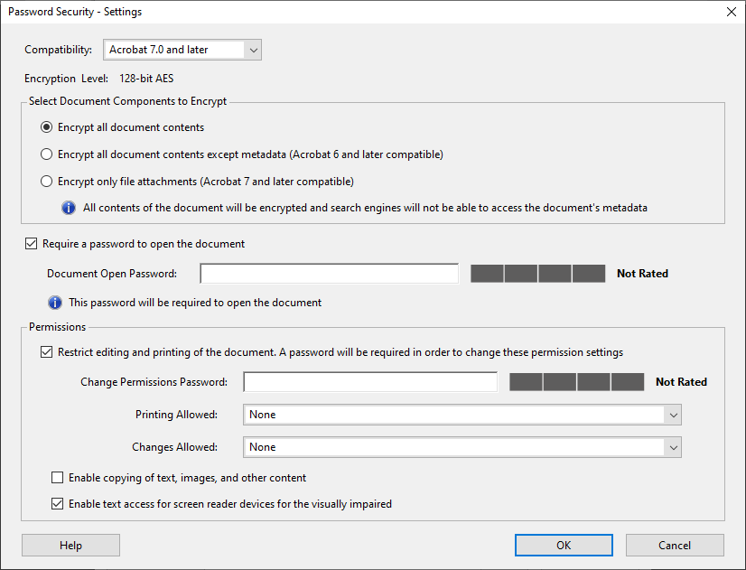

There are several reasons why Adobe’s PDF format — “PDF” stands for “Portable Document Format” — gained the popularity it did. One reason is certainly the “portability”: PDF documents are viewed and printed in exactly the same way on any computer platform. But the fact that PDF documents aren’t editable and well protected is unarguably another key factor in the success of this document format. Send a PDF file to your printing company and they’ll reproduce your brochure; there’s no need for you to hand out your source files. Post a PDF document on an Internet server: everybody can download the document, nobody can change it.
Or can they? State-of-the-art OCR software doesn’t just create PDF files of the recognized documents, the software also reads, “repurposes” them! PDF files can be recognized just as prescanned images and faxes can be…
PDF files can contain images and text. Let’s start with image-based PDF documents. Open a PDF image file with your OCR software, execute the recognition and save the recognition result to a text document (in any supported text format). You could even save the OCR result… in a text-based PDF document, in which case you convert image PDF files to text PDF files!
But PDF files can also contain text, and when that is the case, the files are usually protected. With unprotected PDF files, the content can be retrieved (copied and saved to an RTF file), with “read-only” files, the content cannot be extracted. These documents can only be viewed and printed. But: your OCR software “unlocks” PDF content for you, prolongs its life cycle! You convert “read-only”, static PDF documents, where the text is normally inaccessible. After the file conversion, the text can be accessed freely.
An important nuance: no OCR software package opens password-protected PDF documents, even if all other security barriers are broken down by them. (To be specific: “master passwords” that set the permissions of PDF documents don’t bother OCR software, “user passwords” required to open a PDF document do.) All other PDF security barriers are surmounted by OCR software!

Training the system further — The accuracy of OCR software — How good are your scanning skills? — With a little help from the friends — Recognizing snapshots — Recognizing prescanned images and faxes — Repurposing PDF files
Home page — Intro — Scanners — Images — History — OCR — Languages — Accuracy — Output — BCR — Pen scanners — Sitemap — Search — Contact – Feedback